1. Datos Cuantitativos Discretos
Contexto del Estudio: Auditoría de control de calidad en una fábrica de juegos de mesa. Se registraron los resultados obtenidos al lanzar un dado calibrado 100 veces consecutivas para analizar su distribución empírica y buscar posibles sesgos de fabricación.
Datos registrados (n=100): 2, 4, 1, 6, 3, 5, 2, 1, 6, 2, 4, 5, 3, 1, 6, 2, 5, 4, 3, 1, 2, 6, 5, 4, 1, 3, 2, 6, 5, 1, 4, 2, 3, 6, 5, 4, 1, 2, 3, 6, 5, 4, 1, 2, 3, 6, 5, 4, 1, 2, 3, 6, 5, 4, 1, 2, 3, 6, 5, 4, 1, 2, 3, 6, 5, 4, 1, 2, 3, 6, 5, 4, 1, 2, 3, 6, 5, 4, 1, 2, 3, 6, 5, 4, 1, 2, 3, 6, 5, 4, 1, 2, 3, 6, 5, 4, 1, 2, 3, 6
Tabla de Distribución de Frecuencias
| Clase (xᵢ) | Frec. Absoluta (fᵢ) | Frec. Relativa (hᵢ) | Frec. Acumulada (Fᵢ) |
|---|---|---|---|
| 1 | 17 | 0.17 | 17 |
| 2 | 18 | 0.18 | 35 |
| 3 | 16 | 0.16 | 51 |
| 4 | 15 | 0.15 | 66 |
| 5 | 17 | 0.17 | 83 |
| 6 | 17 | 0.17 | 100 |
| TOTAL | 100 | 1.00 | - |
Representación Gráfica
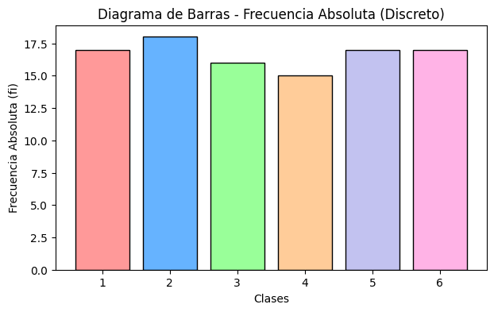
Figura 1.1: Diagrama de Barras (fᵢ)
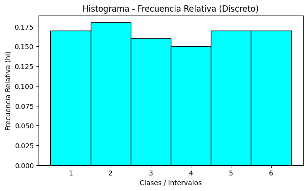
Figura 1.2: Histograma (hᵢ)

Figura 1.3: Polígono de Frecuencias (hᵢ)
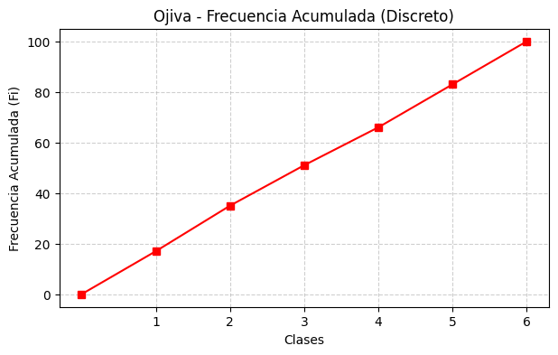
Figura 1.4: Ojiva (Fᵢ)
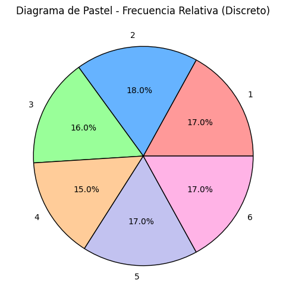
Figura 1.5: Diagrama de Pastel (hᵢ)
2. Datos Cuantitativos Continuos
Contexto del Estudio: Análisis antropométrico institucional. Se determinó la estatura exacta (expresada en metros) de una muestra aleatoria de 100 estudiantes de nuevo ingreso con el objetivo de establecer parámetros para el diseño ergonómico del mobiliario en las aulas.
Datos registrados (n=100): 1.55, 1.62, 1.78, 1.50, 1.66, 1.85, 1.72, 1.60, 1.68, 1.75, 1.92, 1.58, 1.64, 1.81, 1.70, 1.69, 1.54, 1.77, 1.88, 1.65, 1.61, 1.73, 1.80, 1.52, 1.67, 1.74, 1.82, 1.95, 1.59, 1.63, 1.71, 1.83, 1.90, 1.56, 1.68, 1.76, 1.86, 1.53, 1.62, 1.79, 1.98, 1.57, 1.65, 1.75, 1.84, 1.51, 1.66, 1.72, 1.87, 1.91, 1.55, 1.64, 1.78, 1.89, 1.60, 1.69, 1.70, 1.85, 1.94, 1.58, 1.67, 1.73, 1.81, 1.93, 1.54, 1.61, 1.77, 1.82, 1.96, 1.52, 1.63, 1.74, 1.80, 1.99, 1.56, 1.68, 1.76, 1.86, 1.59, 1.65, 1.71, 1.84, 1.57, 1.62, 1.79, 1.53, 1.66, 1.75, 1.51, 1.64, 1.72, 1.50, 1.60, 1.78, 1.55, 1.69, 1.70, 1.58, 1.67, 1.73
Tabla de Distribución de Frecuencias
| Clase (k) | Límite Inf. (Lᵢ) | Límite Sup. (Lₛ) | Marca de Clase (xᵢ) | Frec. Absoluta (fᵢ) | Frec. Relativa (hᵢ) | Frec. Acumulada (Fᵢ) |
|---|---|---|---|---|---|---|
| 1 | 1.50 | 1.59 | 1.55 | 20 | 0.20 | 20 |
| 2 | 1.60 | 1.69 | 1.65 | 30 | 0.30 | 50 |
| 3 | 1.70 | 1.79 | 1.75 | 25 | 0.25 | 75 |
| 4 | 1.80 | 1.89 | 1.85 | 15 | 0.15 | 90 |
| 5 | 1.90 | 2.00 | 1.95 | 10 | 0.10 | 100 |
| TOTAL | 100 | 1.00 | - | |||
Representación Gráfica
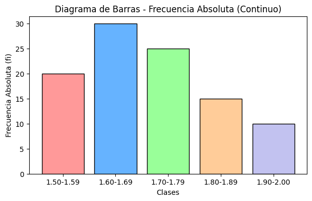
Figura 2.1: Diagrama de Barras (fᵢ)
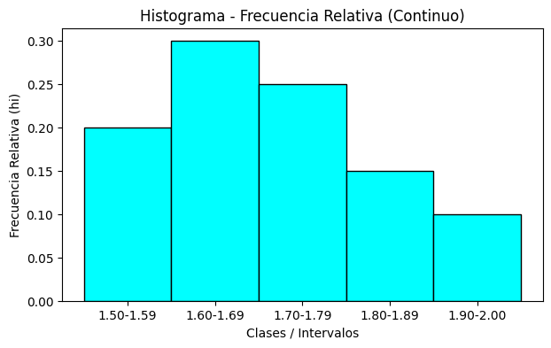
Figura 2.2: Histograma (hᵢ)
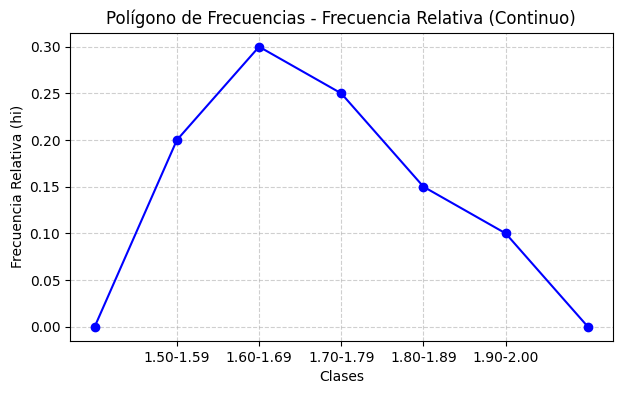
Figura 2.3: Polígono de Frecuencias (hᵢ)
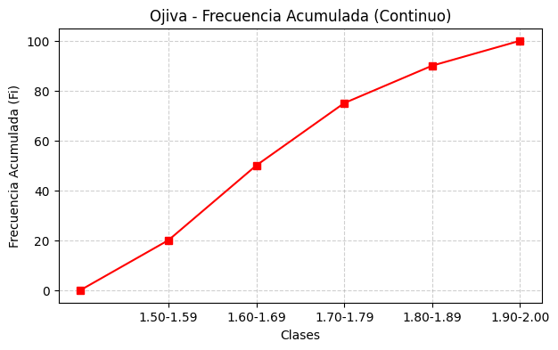
Figura 2.4: Ojiva (Fᵢ)
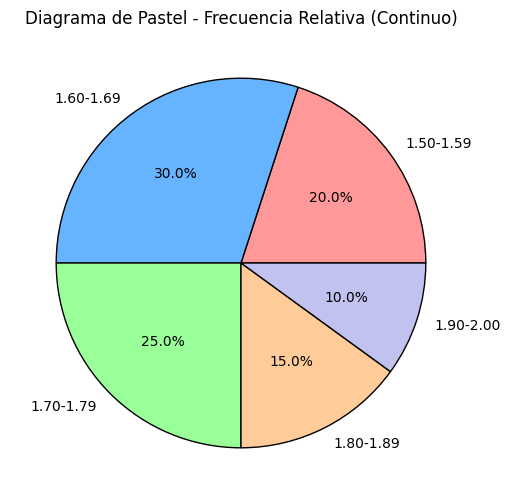
Figura 2.5: Diagrama de Pastel (hᵢ)
3. Datos Cualitativos
Contexto del Estudio: Investigación de mercado en el sector de telecomunicaciones. Se aplicó un instrumento de recolección de datos a 100 usuarios para determinar la marca de su teléfono inteligente principal, permitiendo evaluar la penetración de mercado de las marcas líderes.
Datos registrados (n=100): Samsung, Apple, Xiaomi, Motorola, Huawei, Samsung, Apple, Xiaomi, Motorola, Samsung, Apple, Xiaomi, Samsung, Apple, Motorola, Huawei, Samsung, Apple, Xiaomi, Samsung, Apple, Huawei, Samsung, Xiaomi, Apple, Motorola, Samsung, Apple, Xiaomi, Samsung, Apple, Motorola, Samsung, Xiaomi, Apple, Huawei, Samsung, Apple, Xiaomi, Samsung, Apple, Motorola, Samsung, Xiaomi, Apple, Huawei, Samsung, Apple, Xiaomi, Samsung, Apple, Motorola, Samsung, Xiaomi, Apple, Huawei, Samsung, Apple, Xiaomi, Samsung, Apple, Motorola, Samsung, Xiaomi, Apple, Huawei, Samsung, Apple, Xiaomi, Samsung, Apple, Motorola, Samsung, Xiaomi, Apple, Huawei, Samsung, Apple, Xiaomi, Samsung, Apple, Motorola, Samsung, Xiaomi, Apple, Huawei, Samsung, Apple, Xiaomi, Samsung, Apple, Motorola, Samsung, Xiaomi, Apple, Huawei, Samsung, Apple, Xiaomi, Samsung
Tabla de Distribución de Frecuencias
| Categoría (Marca) | Frec. Absoluta (fᵢ) | Frec. Relativa (hᵢ) | Frec. Acumulada (Fᵢ) |
|---|---|---|---|
| Samsung | 30 | 0.30 | 30 |
| Apple | 25 | 0.25 | 55 |
| Xiaomi | 20 | 0.20 | 75 |
| Motorola | 15 | 0.15 | 90 |
| Huawei | 10 | 0.10 | 100 |
| TOTAL | 100 | 1.00 | - |
Representación Gráfica
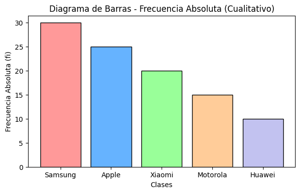
Figura 3.1: Diagrama de Barras (fᵢ)
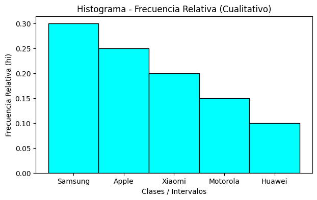
Figura 3.2: Histograma (hᵢ)

Figura 3.3: Polígono de Frecuencias (hᵢ)
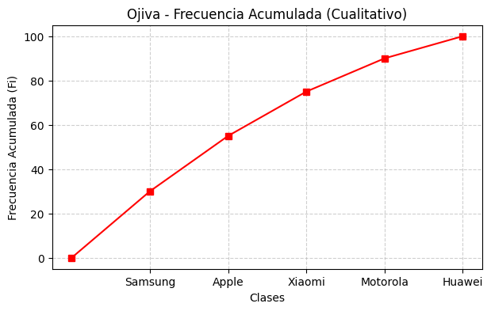
Figura 3.4: Ojiva (Fᵢ)
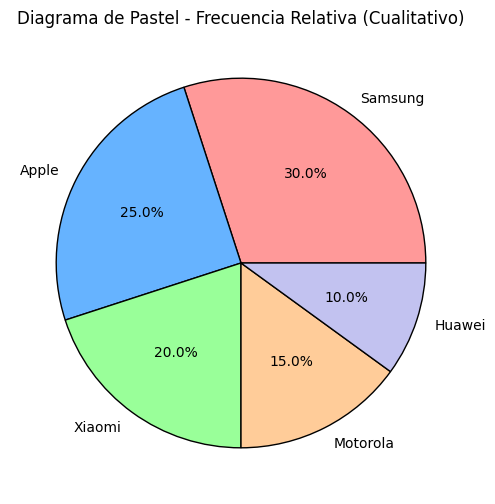
Figura 3.5: Diagrama de Pastel (hᵢ)